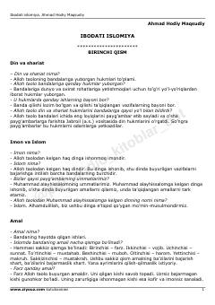

IIIslom dini va shariat hukmlari haqida boshlang'ich savol-javob qo'llanmasi.
Ahmad Hodiy Maqsudiyning ushbu asari islom dini asoslari, shariat hukmlari va ibodat masalalarini o'rgatuvchi boshlang'ich qo'llanmadir. Kitobda iymon, islom, amallarning turlari (farz, vojib, sunnat) va boshqa diniy tushunchalar sodda savol-javob shaklida bayon etilgan.